Panduan lengkap dari daftar akun hingga publikasi konten
untuk guru pengguna template Rumah Digital Guru
Web Builder Team · 2026
Selamat datang! Panduan ini akan memandu Anda dari nol — mulai daftar
akun, beli domain .id, membangun website pribadi, sampai publikasi
konten. Ditulis khusus untuk guru Indonesia yang menggunakan template
Rumah Digital Guru (kolaborasi PANDI × UPI).
Program yang memberi setiap guru Indonesia rumah digital pribadi — bukan sekadar akun di platform milik orang lain. Konsep:
.id — alamat pribadi yang mewakili diri Anda sebagai guru/guru.id langsung dari platform (tanpa perantara)Dari nol sampai website live:
1. Daftar akun (email + password)
↓
2. Login → Dashboard
↓
3. Klik "Beli Domain + Buat Situs"
↓
4. Cari domain → konfirmasi kontak → bayar
↓
5. Domain aktif (biasanya 1-5 menit)
↓
6. Pilih template Rumah Digital Guru → auto-provision 9 halaman
↓
7. Isi profil, edit konten, tulis artikel
↓
8. Publikasikan → website live di domain Anda
Total waktu setup awal: ~30 menit (kalau Anda sudah tahu isi apa yang mau dipublish, bisa lebih cepat).
| Istilah | Arti |
|---|---|
| Situs / Site | Website milik Anda, punya domain sendiri + template + isi (halaman, tulisan, materi) |
| Domain | Alamat internet (mis. guruhebat.id) yang mengarah ke situs Anda |
| Template | Blueprint desain siap pakai — Anda pakai template "Rumah Digital Guru" |
| Blok / Block | Komponen halaman (Hero, Section, Grid, Navbar, Footer, dsb.) — Lego yang disusun jadi halaman |
| Layout Bersama | Header + Footer yang berlaku ke semua halaman sekaligus (fitur baru) |
| Rich Editor | Editor teks kaya untuk tulisan panjang — support gambar, video, audio, tabel |
| Rubrik | Kategori konten (Ceritaku, Bacaanku, dsb.) — setiap tulisan masuk ke salah satu |
| Draft vs Published | Draft = disimpan tapi belum tampil publik. Published = visible di domain Anda |
| Autosave | Sistem simpan otomatis setiap 3 detik saat Anda mengetik (tanpa perlu klik simpan) |
https://kubaca.id/login (atau URL platform Anda)Wajib:
- Email aktif — untuk daftar akun + notifikasi (transaksi, expiry domain)
- Nomor HP — untuk data pemilik domain (verifikasi PANDI)
- Alamat lengkap — untuk data pemilik domain
- NIK (khusus domain .id) — validasi otomatis ke Dukcapil oleh registry
- Metode pembayaran — kartu, e-wallet (GoPay/OVO/Dana), atau transfer bank
Opsional (tapi bagus disiapkan): - Foto profil — gambar diri untuk ditampilkan di kartu direktori - Bio singkat — 1-2 kalimat tentang Anda sebagai guru - Bio lengkap — paragraf yang tampil di halaman Profil - Quote favorit — motto/filosofi mengajar - Beberapa artikel — draft tulisan yang siap di-publish saat website live
Kalau ada masalah teknis yang tidak bisa diselesaikan sendiri, hubungi
admin platform Anda (kontak biasanya tersedia di footer website Web
Builder atau halaman /kontak).
Panduan ini fokus pada satu jalur: Anda sebagai guru, sebagai pemilik website Anda sendiri. Semua langkah bisa dikerjakan sendiri tanpa bantuan pihak lain.
Lanjut ke bab utama: Panduan Klien — Rumah Digital Guru.
Panduan lengkap untuk guru yang membangun website pribadinya dengan Web Builder + template Rumah Digital Guru (PANDI × UPI). Alur end-to-end dari daftar akun hingga publikasi konten.
Bab ini menggantikan alur klien lama untuk fitur guru terbaru (Q1 2026): shared layout header/footer, editor micro-editing, autosave rich editor, drag-drop image, dan penanganan media yang lebih ramah pemula.
📸 Catatan screenshot: sebagian screenshot fitur editor baru (Layout Bersama, micro-editing, autosave badge) mungkin belum ter-capture di bundle PDF karena UI berubah pesat di Q1 2026. Jalankan
node capture.mjs clientdidocs/user-guide/capture-screenshots/untuk regenerate — atau ikuti tampilan di UI Anda langsung (langkah + alur tetap sama seperti dijelaskan).
Kalau belum punya akun, buka halaman /register di dashboard Web Builder
(mis. https://kubaca.id/register).
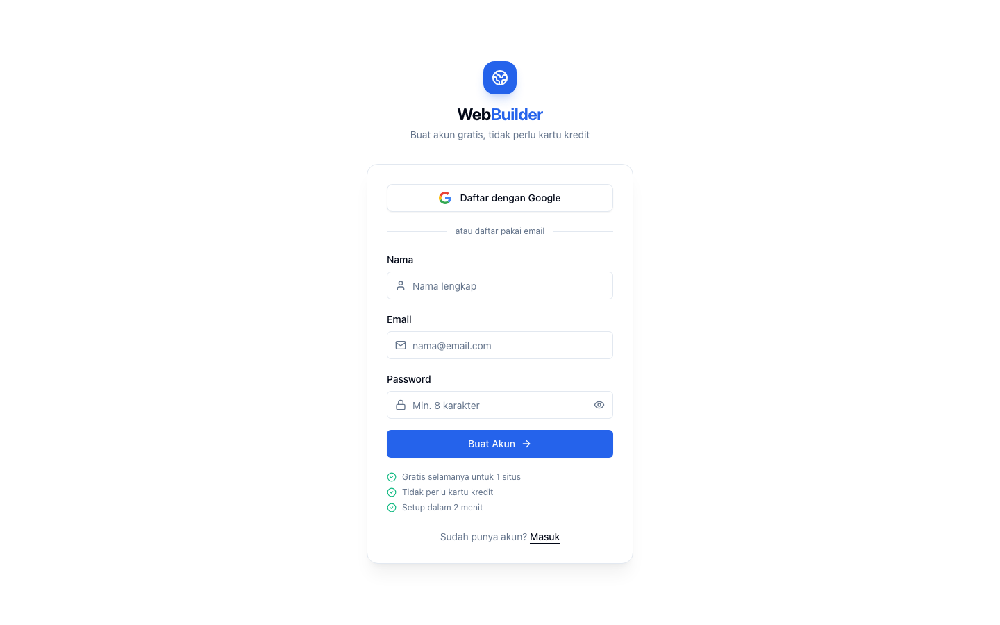
Isi: - Nama — nama lengkap Anda (tampil di kartu direktori guru nanti) - Email — untuk login + notifikasi transaksi + expiry domain - Password — minimal 8 karakter, kombinasi huruf + angka - Konfirmasi Password
Klik Daftar. Sistem otomatis login setelah pendaftaran sukses → langsung diarahkan ke Dashboard.
Catatan: role default adalah
client. Tidak perlu izin admin — semua guru bisa mulai sendiri.
Untuk login berikutnya, buka /login.
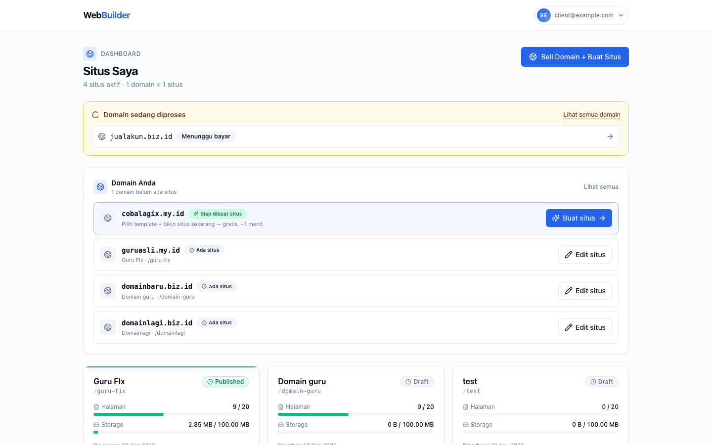
Tips: - Password lupa? Ketuk tautan Lupa Password — kode reset dikirim ke email (butuh 1-3 menit, cek folder Spam kalau tidak masuk) - Token akses berlaku 15 menit, otomatis diperpanjang selama tab aktif — Anda hampir tidak akan pernah "diusir keluar" secara tiba-tiba
Web Builder menerapkan konsep 1 domain = 1 situs. Tidak ada subdomain gratis — setiap situs baru membutuhkan domain yang sudah dibeli lewat platform ini.
Dari dashboard, ketuk tombol Beli Domain + Buat Situs (CTA utama di tengah). Wizard akan memandu 3 langkah.
Ketik nama yang Anda inginkan di kolom pencarian (mis. rumahsayaguru).
Wizard cek ketersediaan real-time di semua TLD (.id, .com, .web.id,
.sch.id, dst).
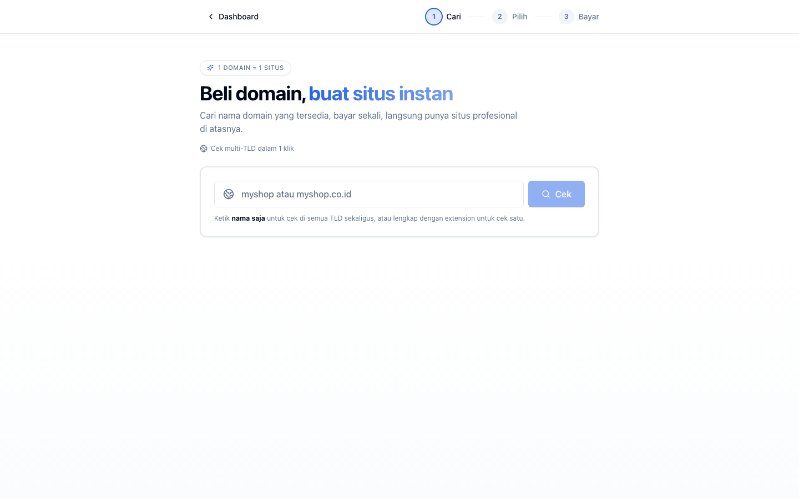
Rekomendasi untuk guru Indonesia: .id — mencerminkan identitas
nasional + support penuh dari PANDI. TLD .sch.id untuk sekolah, .or.id
untuk komunitas guru.
Setelah pilih TLD:
- Wizard menampilkan subtotal + PPN 11%
- Isi profil pemilik domain (nama, HP, alamat, kota, kode pos)
- Untuk .id: NIK wajib (validasi ke Dukcapil oleh registry)
- Punya kode promo? Ketuk "Punya kode promo?" → validasi otomatis, diskon
langsung tercermin di total
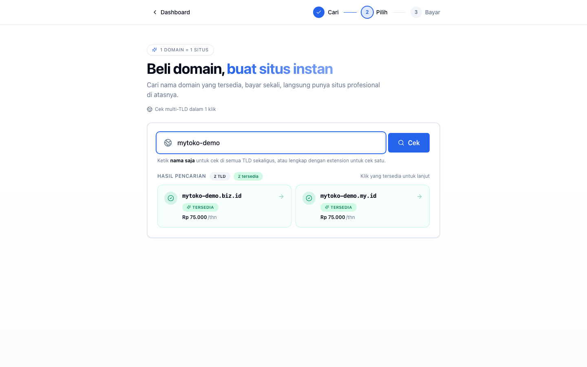
Ketuk Bayar Sekarang → arahkan ke halaman pembayaran gateway.
Setelah pembayaran sukses, wizard arahkan ke halaman polling status. Timeline biasanya:
pending_payment → biru — menunggu konfirmasi pembayaranpending_provisioning → kuning — sudah bayar, sedang di-register ke
registry (10 detik–2 menit tergantung TLD)active → hijau — domain resmi milik Anda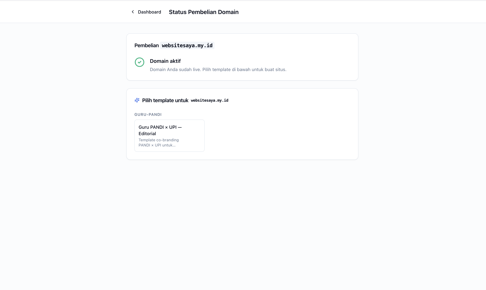
Halaman auto-refresh tiap 3 detik. Kalau failed, muncul tombol Coba
Lagi — retry tidak dikenakan biaya ulang.
Setelah domain active, tombol Pilih Template muncul otomatis. Wizard
menampilkan daftar template — cari Guru PANDI × UPI.
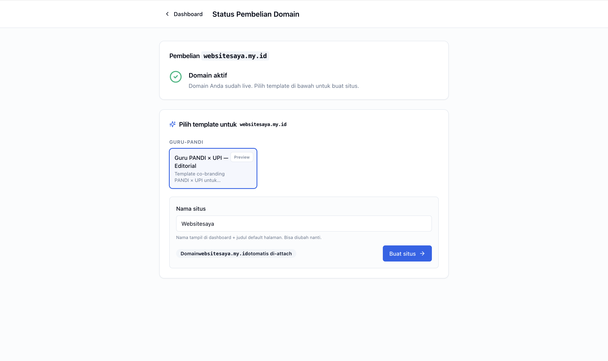
Ketuk kartunya → Gunakan Template. Sistem otomatis membangun:
Sample data boleh Anda hapus / edit — anggap sebagai starter.
⏱️ Provisioning selesai dalam ~5 detik. Setelah itu Anda otomatis diarahkan ke editor situs baru.
URL: /sites/[id] — tampilan awal setelah masuk situs Anda. Sidebar kiri
gelap (navy) menampilkan semua fitur situs.
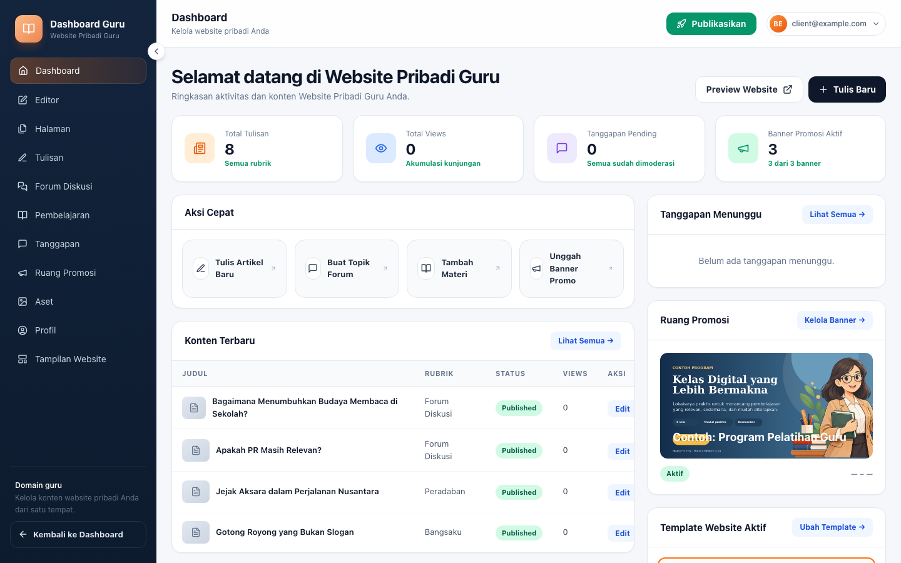
Menu sidebar (dari atas):
| Menu | Fungsi |
|---|---|
| Dashboard | Overview stat views/tanggapan/tulisan/materi + shortcut |
| Editor | Editor blok visual — susun halaman dengan drag-drop + inline edit |
| Halaman | Daftar halaman situs, tambah/hapus/duplikat |
| Tulisan | Kelola artikel 6 rubrik + forum diskusi |
| Forum Diskusi | Shortcut ke Tulisan filter rubrik forum-diskusi |
| Pembelajaran | Kelola materi pembelajaran (untuk siswa/pembaca) |
| Tanggapan | Moderasi komentar pembaca |
| Ruang Promosi | Banner 2:1 untuk program guru |
| Aset | Upload + kelola gambar & audio |
| Profil | Identitas guru + hero statement + bio + tautan sosial |
| Tampilan Website | Ganti template, kustomisasi warna & font |
Tombol Publikasikan di header kanan atas → publish semua halaman sekaligus (dari status draft ke live).
URL: /sites/[id]/editor. Editor 3-kolom:
Fitur baru: header dan footer dikelola sekali → berlaku ke semua halaman. Di sidebar kiri paling atas ada seksi Layout Bersama dengan 2 entri: Header dan Footer.
Ketuk Header → canvas berpindah ke mode edit header. Muncul strip amber di atas canvas dengan toggle "Header aktif".
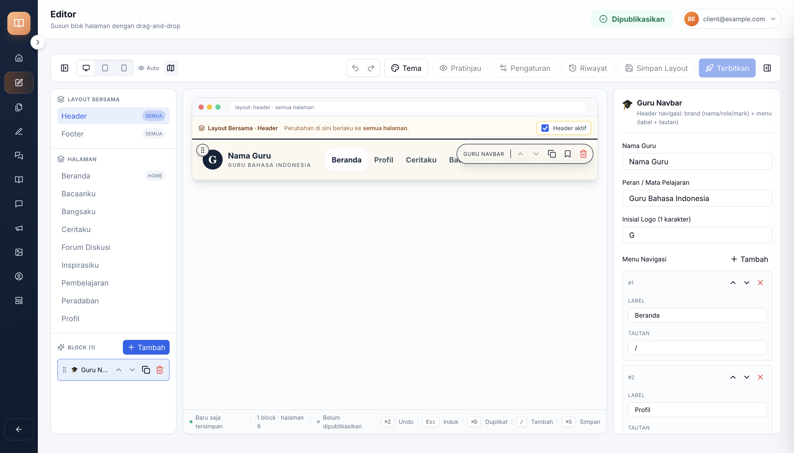
Kenapa penting? - Edit sekali (mis. ganti tautan menu, ubah nama guru di brand) → otomatis update di ~10 halaman - Kalau ingin halaman khusus tanpa header (mis. landing kampanye), matikan toggle sementara
Saat mode halaman biasa, guru akan melihat preview read-only dari header di atas canvas + footer di bawah — cukup tampilkan visual, klik untuk masuk mode edit layout. Blok Navbar/Footer di dalam page tree otomatis di-sembunyikan supaya tidak double render.
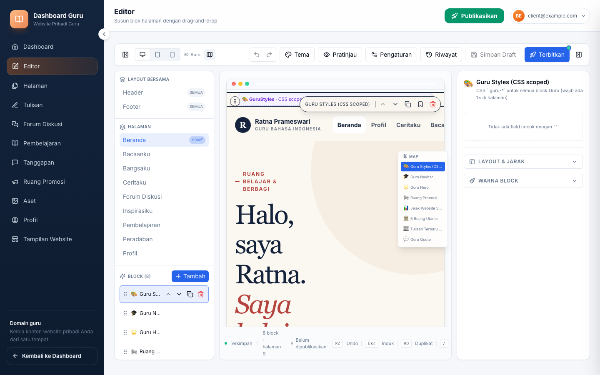
Fitur baru: semua text di blok bisa di-edit langsung di canvas (bukan cuma via panel kanan). Klik pada judul hero, subtitle, label tombol, item counter — cursor langsung masuk mode edit. Blur (klik di luar) atau tekan Enter → simpan.
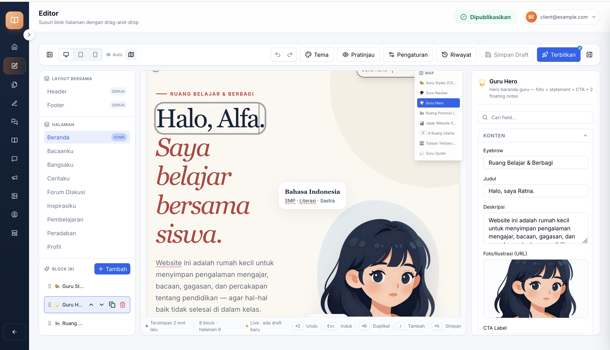
Berlaku untuk semua blok Guru (Navbar, Hero, Footer, Rubric Grid, Rubric Hero, Quote, Profile Card, Timeline, Tag List, Stats Bar, Latest Grid, Article Grid, Learning Grid) dan blok Pro (Aurora Hero, Highlight Hero, Typewriter Hero, Glow Card Grid, Border Beam Card, Card Stack Showcase, Animated Counter Stats, Moving Border CTA, dll).
Yang masih via panel kanan: URL link, URL gambar, tambah/hapus item dari list, warna, spacing — karena butuh picker khusus.
Setiap blok punya handle drag (ikon ≡ di corner) — geser untuk ubah
urutan. Selama drag, muncul badge ghost kecil (emoji + nama blok) yang
mengikuti cursor → tahu blok mana yang sedang dipindah.
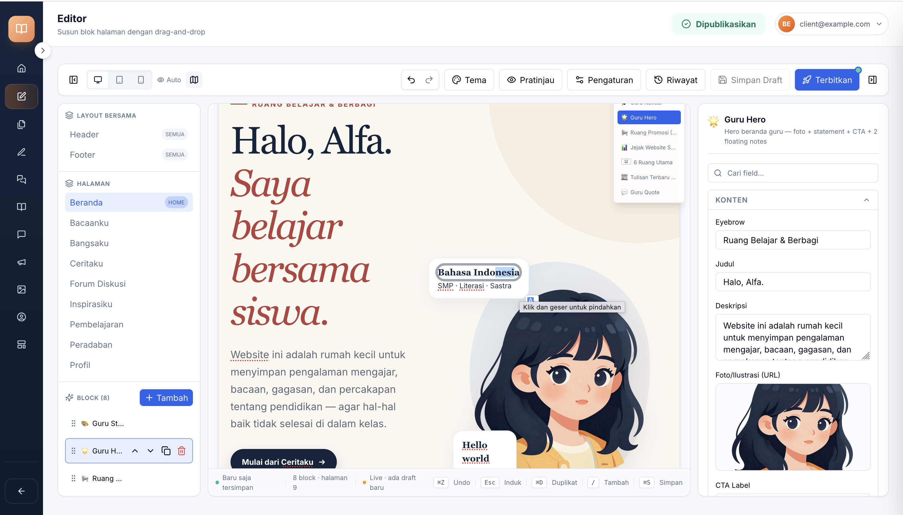
Drag ke Container / Columns: kalau halaman punya blok Container atau Columns, Anda bisa drop blok ke dalamnya — container kosong menampilkan "Container kosong · lepas block di sini" sebagai target drop.
Ketuk + Tambah di sidebar kiri atau tombol besar di canvas kosong → dialog palette. Filter dengan search atau tab (Semua / Pro / Standar / Snippet). Klik blok → langsung tersisip di posisi terakhir.
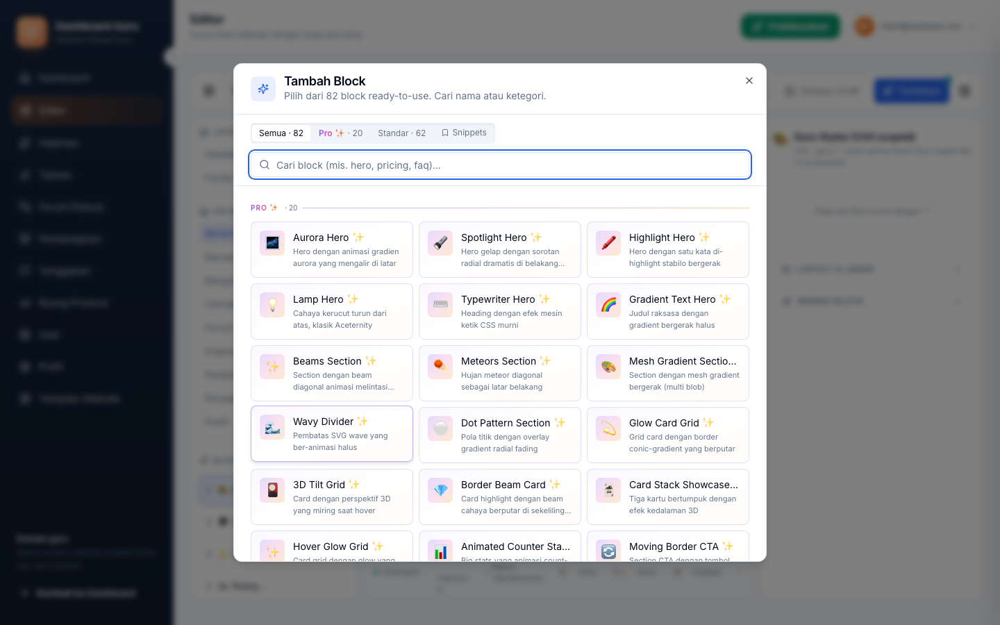
Blok yang di-select → panel kanan menampilkan Konten (schema field) dan Layout & Style (padding, margin, max-width, alignment, background, override warna). Semua responsive-aware — bisa set beda per breakpoint (mobile / tablet / desktop).

Ketuk ikon Tema di toolbar → drawer warna + font. Semua blok otomatis
pakai variable CSS --color-primary, --font-heading, dst → ganti warna
= ganti seluruh situs.
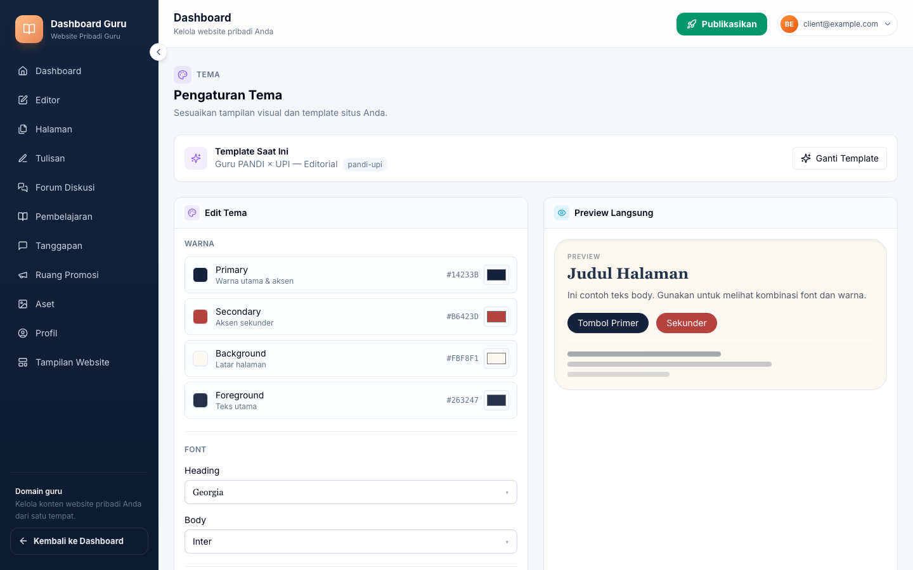
Rich Editor dipakai di 4 tempat: Tulisan, Materi Pembelajaran, Blog (kalau situs punya rubrik blog), dan halaman Artikel Platform (hanya admin). Semua fitur di bawah berlaku sama.

Kelompok toolbar: 1. Format text — Bold, Italic, Strikethrough, Inline code 2. Heading — H1 / H2 / H3 3. List — Bullet, Numbered, Task list (checkbox), Quote, Code block, Horizontal rule 4. Insert — Link, Gambar (dari asset), Audio (dari asset), YouTube, Table 5. History — Undo, Redo
Keyboard shortcut standar: ⌘B bold, ⌘I italic, ⌘Z undo, ⌘⇧Z redo.
Cara 1 — Tombol asset: klik ikon gambar di toolbar → dialog asset picker terbuka. Pilih dari library atau upload baru (drop file / klik "Upload").
Cara 2 — Drag & drop langsung ke editor (fitur baru): drop file gambar dari desktop / File Explorer langsung ke body editor. Sistem otomatis upload ke asset library situs + insert di posisi drop.
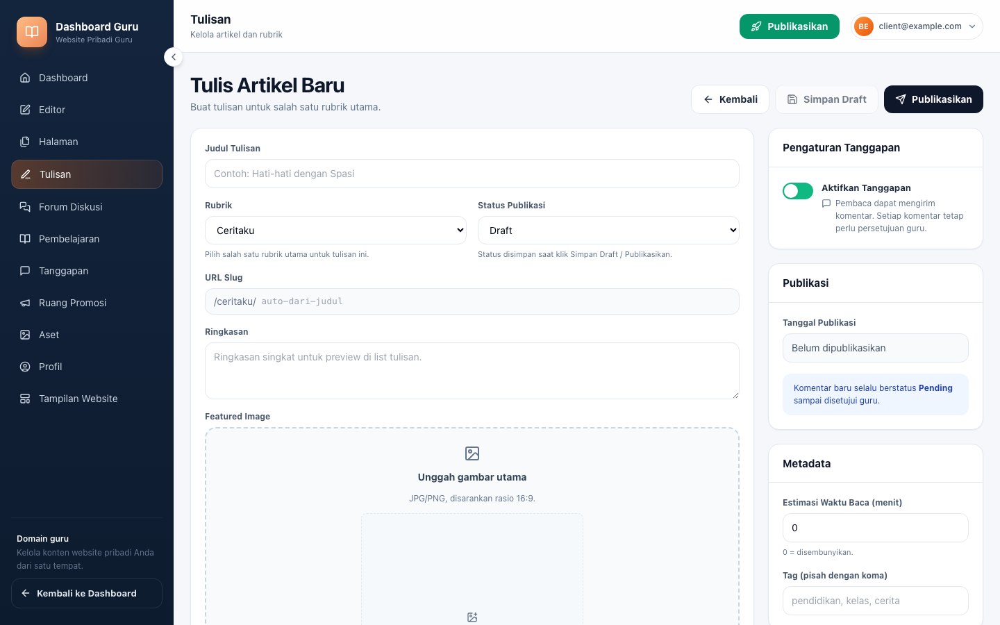
Ganti ukuran: klik gambar → sub-toolbar Ukuran muncul di bawah toolbar utama dengan 4 preset: S (25%) · M (50%) · L (75%) · Full (100%).
Klik ikon YouTube di toolbar → dialog. Paste URL YouTube (bentuk apapun
diterima: youtube.com/watch?v=X, youtu.be/X, youtube.com/embed/X,
youtube.com/shorts/X).
Hapus video (fitur baru): dulu video susah di-delete karena iframe menelan klik. Sekarang klik overlay area video → node ter-select (border biru + tombol × di corner). Klik × atau tekan Backspace/Delete untuk hapus.

Play preview: kalau node sudah selected, klik iframe kedua kali → mode play. Klik di luar untuk keluar seleksi.
Klik ikon Audio di toolbar → dialog asset picker filter kind=audio. Pilih file audio yang sudah di-upload di menu Aset.
Hapus audio: sama pattern dengan YouTube — klik overlay untuk select, klik × untuk hapus.
Klik ikon Tabel → menu dropdown (Insert 3x3, Add row, Add column, Delete row, Delete column, Delete table). Tabel default punya baris header. Styling di renderer sudah include border + padding + header background — konsisten di semua halaman detail (blog / rubric / pembelajaran).
Klik ikon checklist → list checkbox. Setiap item bisa di-toggle (centang/uncheck) langsung di editor + di renderer. Bisa nested (indent child dengan Tab).
Copy dari Word, Google Docs, Notion, atau editor lain → paste ke editor. Sistem otomatis strip formatting bloat (font-family Calibri, mso-* attributes, span kosong) — hanya struktur text + heading + list + link yang dipertahankan. Aman untuk paste artikel panjang tanpa merusak layout.
Semua form tulisan / materi / blog / artikel platform sekarang punya autosave otomatis:
Indikator visual di header form:

Setelah save (auto atau manual):
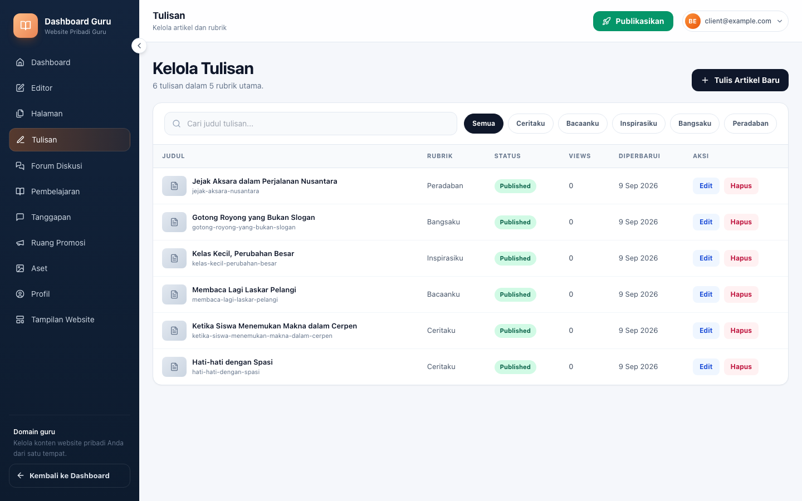
Tombol Simpan Draft otomatis disabled saat tidak ada perubahan (tooltip: "Tidak ada perubahan untuk disimpan").
Kalau ada perubahan belum tersimpan (badge amber muncul) dan Anda: - Tutup tab / refresh browser → browser native prompt "Perubahan Anda mungkin tidak tersimpan" - Klik tombol Kembali → confirm dialog "Ada perubahan belum disimpan. Yakin ingin keluar?"
Sengaja dobel-guard supaya draft yang belum disave tidak hilang tanpa sadar.
Menu Tulisan → daftar artikel dengan tabs 6 rubrik (Ceritaku / Bacaanku / Inspirasiku / Bangsaku / Peradaban / Forum Diskusi).
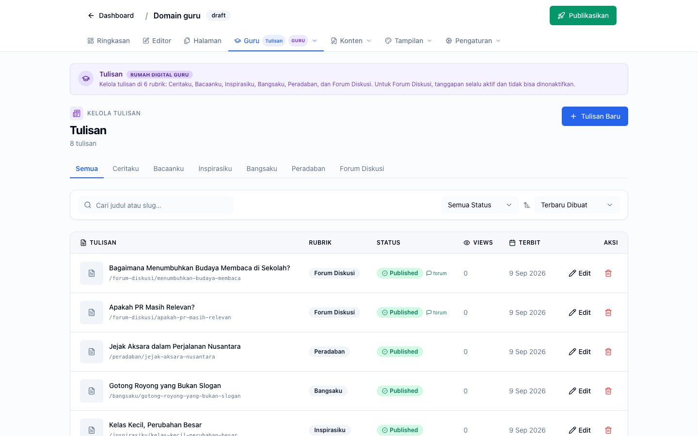
Klik Tulisan Baru → form editor. Pilih rubrik → judul → slug (auto dari judul) → excerpt → isi (Rich Editor) → cover image → tags → status. Simpan draft / publikasikan.

Rubrik Forum Diskusi khusus: comments otomatis enabled (tidak bisa disabled) — supaya pembaca bisa langsung reply.
Menu Pembelajaran → daftar materi (mis. modul, RPP, latihan soal). Beda dengan Tulisan: tidak ada views + tidak ada tanggapan. Fokus konten ajar untuk siswa/pembaca.
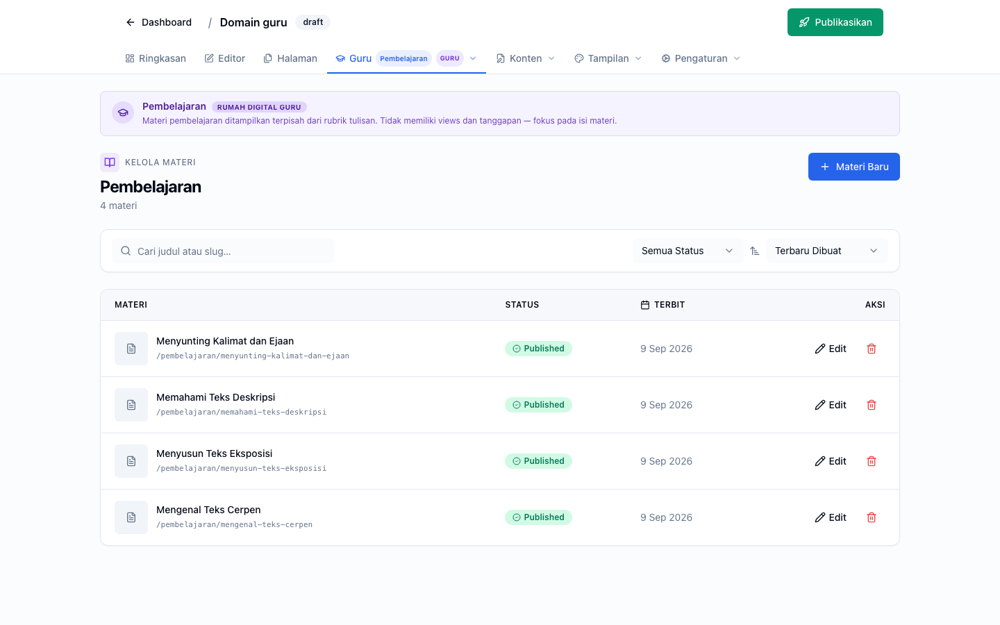
Klik Materi Baru → form sama seperti tulisan (judul + slug + excerpt + Rich Editor + cover + tags + ringkasan) tapi lebih sederhana.
Menu Ruang Promosi → banner 2:1 untuk program pelatihan, komunitas, event, dll. Muncul di seksi Ruang Promosi di beranda.
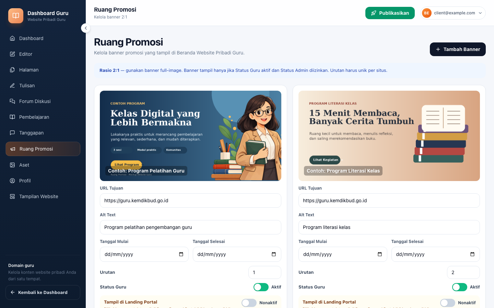
Portal aktif — maksimal 1 banner per guru bisa di-toggle "aktif di
landing portal /guru" (tampil di direktori publik). Guru lain juga bisa
menampilkan 1 banner mereka → shared landing.
Menu Tanggapan → komentar pembaca di tulisan Anda. Tab filter: Menunggu / Disetujui / Ditolak. Aksi per komentar: Setujui / Tolak.
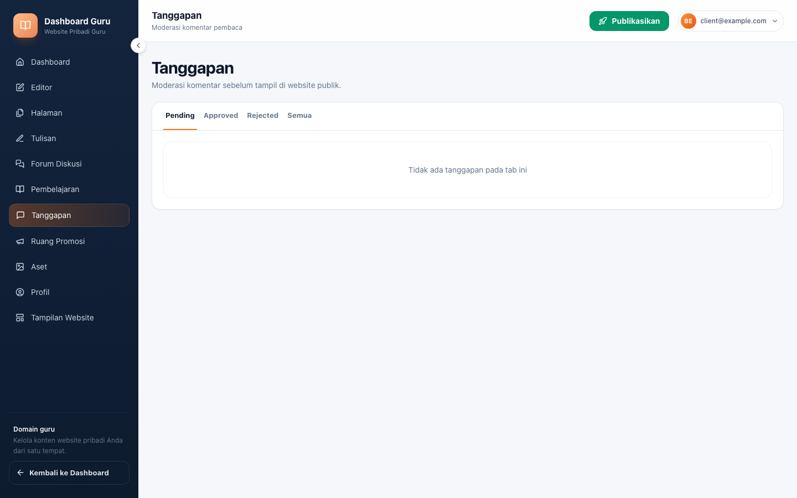
Komentar yang menunggu tidak tampil di publik sampai Anda setujui.
Menu Profil (URL: /sites/[id]/profil) → identitas Anda yang tampil
di:
- Kartu di direktori portal /guru (publik)
- Halaman Profil di situs Anda
- Beberapa blok Guru (Profile Card, Hero, dsb) yang read dari profil
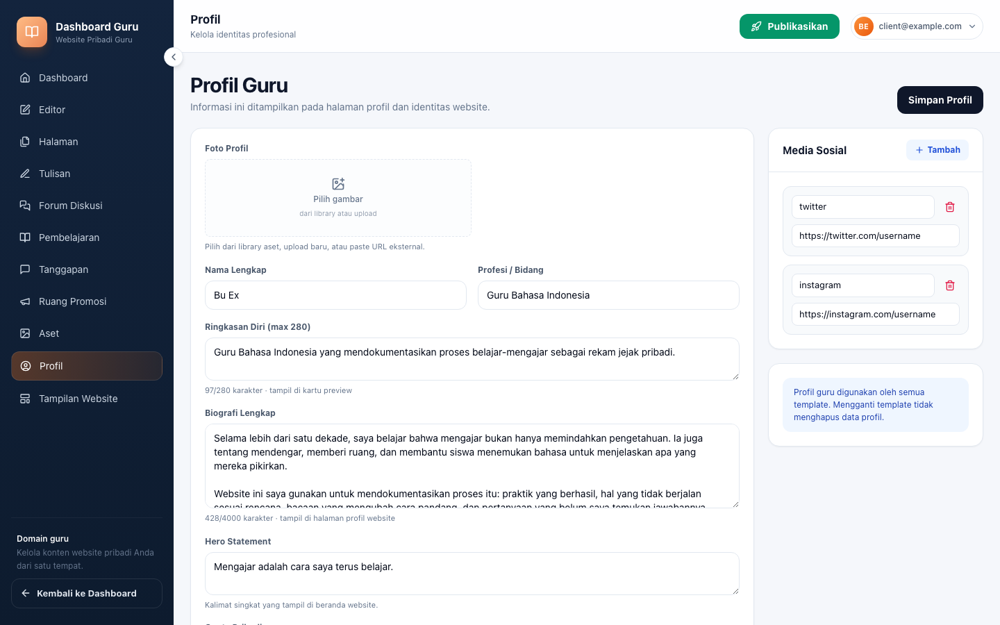
Field wajib untuk tampil di direktori portal: - Nama (dari akun, otomatis) - Mata Pelajaran / Bidang - Bio Singkat (max 280 karakter)
Field opsional: - Foto profil (URL dari asset) - Hero statement (1-2 baris di beranda) - Quote pribadi - Bio lengkap (max 4000 karakter) - Tautan sosial (Twitter, Instagram, YouTube, dll — max 10)
Di editor blok, ketuk Pratinjau di toolbar → generate link share sementara (berlaku 1 jam). Link ini bisa Anda kirim ke rekan/tim untuk review sebelum publish.
Di editor blok, ketuk Terbitkan → salin draft ke versi live. Perubahan langsung visible di domain publik Anda.
Tombol Terbitkan otomatis disabled kalau tidak ada perubahan sejak publish terakhir.
Di dashboard situs (URL: /sites/[id]), ketuk tombol Publikasikan di
header → mengubah status situs ke published + memicu cache purge
supaya konten baru langsung visible di CDN.
Ganti domain untuk situs existing: belum didukung. Kalau perlu ganti domain, hubungi admin.
Situs kedua (kalau punya multiple domain): balik ke dashboard klien
(/dashboard) → semua situs Anda tampil di grid → klik yang mau dikelola.
Domain aktif punya masa berlaku 1 tahun (default). Sistem kirim notifikasi email ke Anda 30 hari sebelum expire, di-resend tiap 7 hari sampai Anda perpanjang.
Kalau domain expired tanpa diperpanjang → situs offline sementara. Guru punya 30 hari grace period untuk perpanjang sebelum domain benar-benar lepas ke pihak lain.
Q: Apakah bisa migrasi konten dari platform lain (WordPress, Medium)?
A: Untuk sekarang manual copy-paste (Rich Editor otomatis sanitize
bloat). Import bulk belum tersedia.
Q: Apakah bisa punya lebih dari 1 admin di situs saya?
A: Bisa. Buka Settings → Collaborators → invite email → assign role
editor atau viewer. Editor bisa edit semua konten kecuali delete
situs. Viewer hanya lihat.
Q: Bagaimana kalau saya lupa toggle Layout Bersama Header dan halaman
saya jadi tanpa header?
A: Buka Editor → sidebar kiri → seksi Layout Bersama → ketuk Header
→ toggle "Header aktif" ke ON. Header langsung muncul di semua
halaman lagi. Blok tersimpan aman selama toggle OFF, tidak hilang.
Q: Kenapa video saya susah di-hapus?
A: Fitur ini sudah diperbaiki. Klik area video di editor → node
ter-select (border biru + tombol × muncul). Klik × atau tekan
Backspace/Delete.
Q: Autosave tidak jalan?
A: Cek:
1. Sudah edit mode? (autosave tidak jalan di form buat baru — wajib
klik Simpan Draft dulu sekali)
2. Judul + slug sudah terisi?
3. Ada perubahan (badge amber "Belum disimpan" muncul)?
Kalau semua yes, tunggu 3 detik → badge berubah jadi emerald "Tersimpan".
Q: Paste dari Word bawa formatting aneh?
A: Sudah diperbaiki. Paste sekarang otomatis strip inline styles + Word
artifacts. Struktur (paragraf, heading, list, link) tetap dipertahankan.
Q: Bisa upload gambar sekaligus banyak?
A: Belum di editor Rich, tapi bisa di menu Aset — bulk upload via
drop multiple files. Copy URL-nya, insert satu-satu di editor.
Setelah publish, konten Anda accessible via:
https://[domain-anda]/https://[domain-anda]/[slug] (mis. /about)https://[domain-anda]/[rubrik] (mis. /ceritaku)https://[domain-anda]/[rubrik]/[slug]https://[domain-anda]/pembelajaran/[slug]https://[domain-anda]/blog/[slug]Direktori portal publik (semua guru): https://kubaca.id/guru